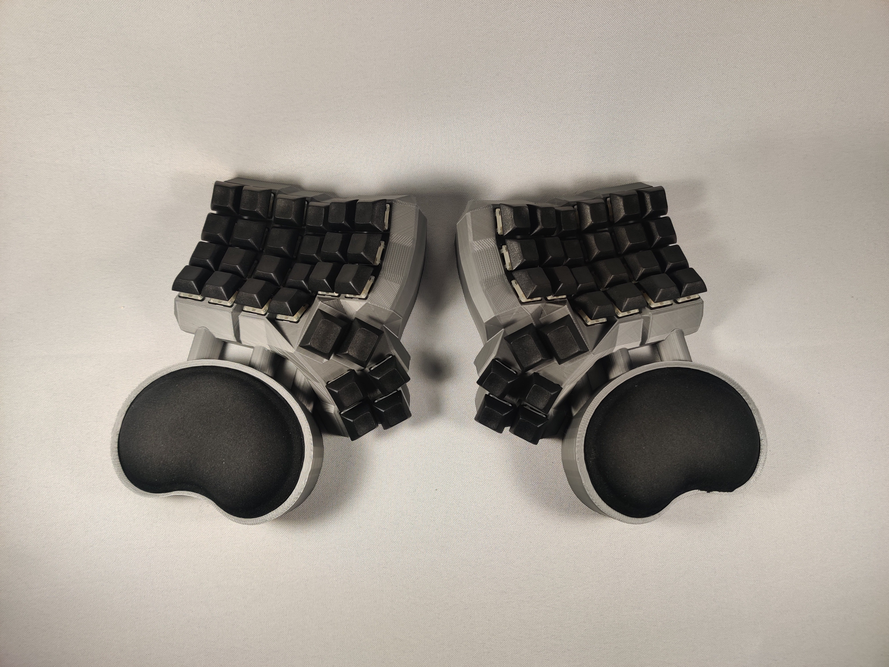
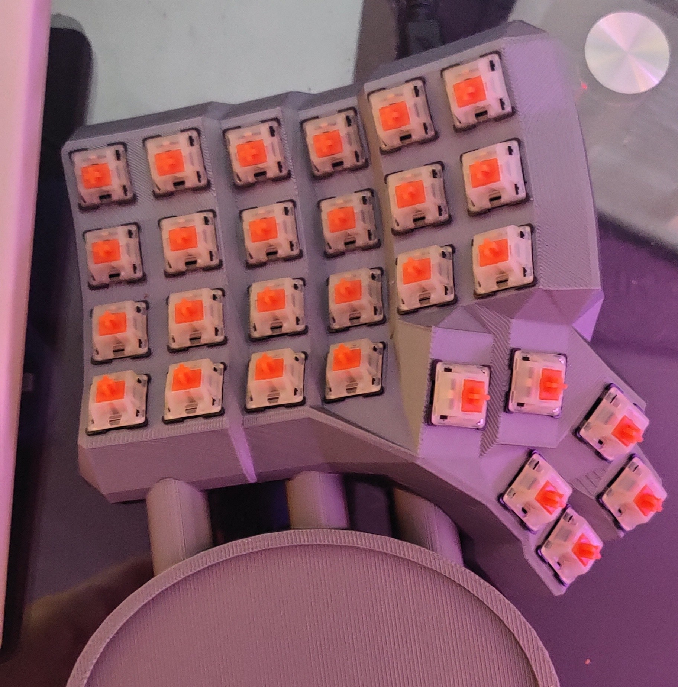
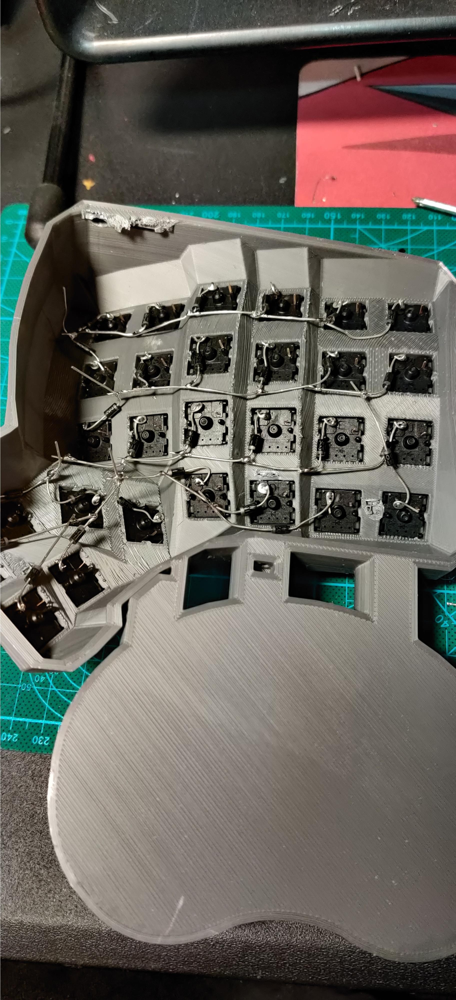
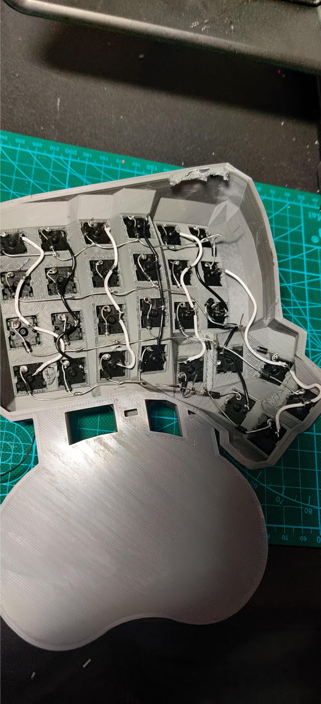
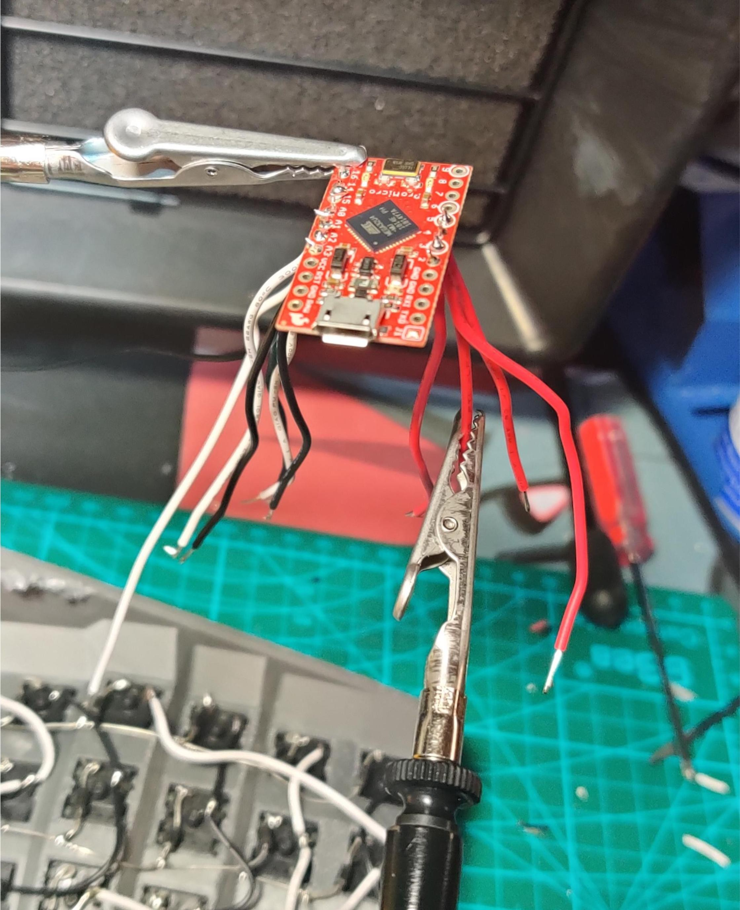
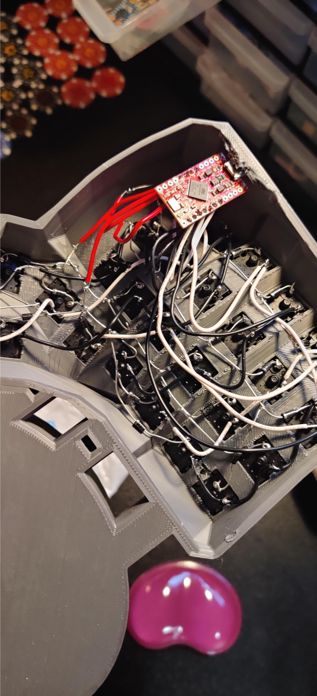
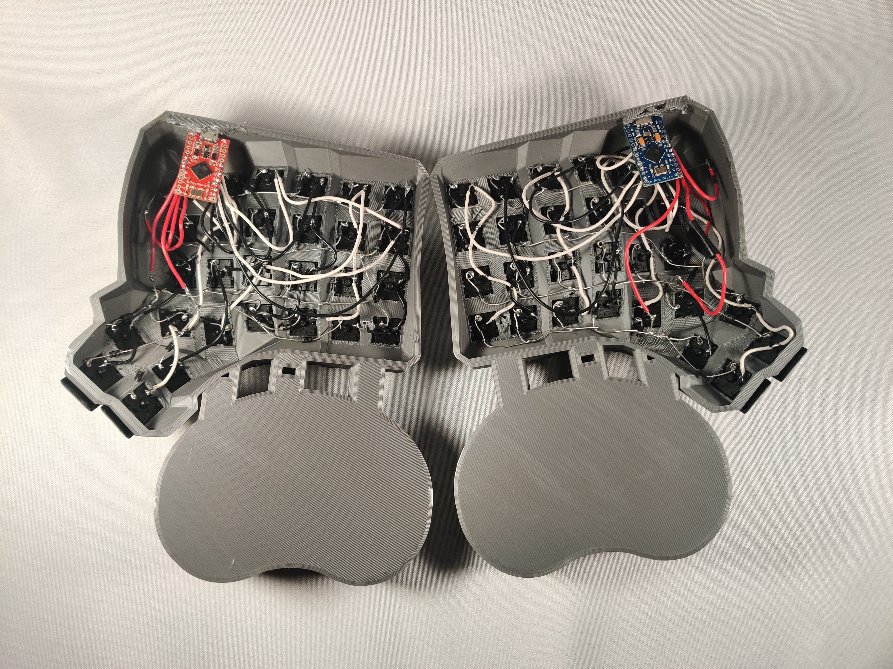
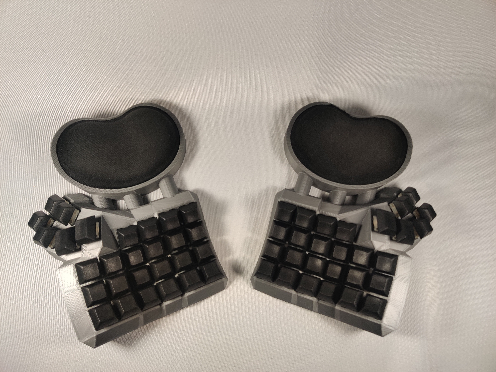
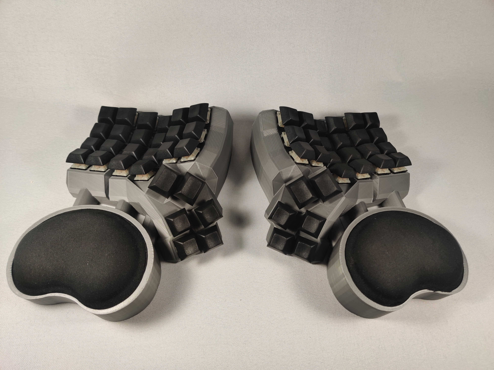
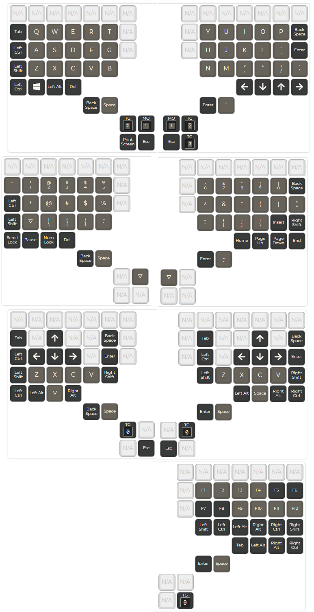

The Quarandream

Beginnings
so i've always wanted a fully 3d-printed handwired build to main, but all these projects seemed too daunting and didnt have my favorite types of layouts. i finally got linked to: this dactyl case generator. so now that i could make the layout ive always wanted (and as a fun bonus its also easier to hand wire cuz of how tall it is) i could finally give it a try. this is my first large handwire and i was nervous i would completely mess it up but here is a quick guide of the process i went through. it was also nice to be able to build something without making any purchases!~
Hardware
things you will need:
> arduino pro micro<
> key switches (c3 tangerines) <
> [optional] lube (krytox g502)<
> 3d printer (creality cr-10s <
> printer filament (gray) <
> dsa keycaps <
> solder <
> soldering iron <
> wire <
> diodes <
> two wrist rests <
Process
first up is creating the layout and hex file to flash the board, i have made a guide as to not repeat myself every handwire project:
i think it is always best to start by flashing the pro micro first, so thats what i did. follow this guide i have made previously:
> flashing arduino pro micro <
next your gunna need a 3d model. i used this wonderful generator:
also here is my unfinished handwiring guide just in case. but please follow something better if ur actually following along

now to the 'easy' stuff, i placed the keycaps in the slots, facing the correct ways and whatnot

and soldered the diodes, following the layout i generated earlier.

then i soldered the wires in place,

then i soldered the wires directly to the arduino,

and finally i soldered the arduino to the matrix. i actually messed up a few times lol but it works.
this actually worked first try! on both sides. i was very hapy with how it turned out. i didnt do any treatment to the 3d printe but i plan to do that to a future one sometime. total build time was across two days. heres some quick shots of it. wooo!!~



bonus: my layers
